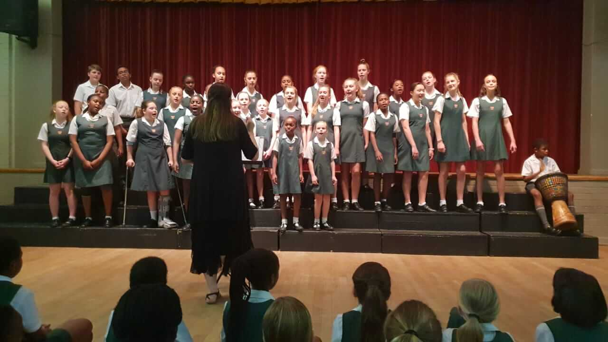
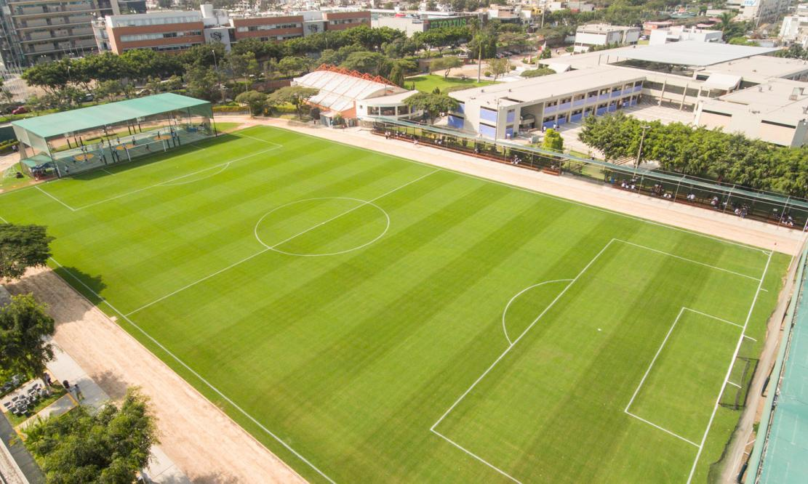

Artes Marciales
Una combinación de las artes marciales más representativas
Coro
Un espacio para hacer música en conjunto a través del canto
Voley
Un deporte en equipo que desarrolla variadas habilidades

Futbol
Un deporte que promueve el trabajo en equipo
Cómo anotarte
1
Acercarse a secretaria de lunes a viernes de 9 a 18 horas
2
Completar el formulario de inscripción
3
Esperar el mail de confirmación de vacante
Comentarios de alumnos
Daniel
"Estoy muy conforme con las clases"
Julieta
"Disfruto de cantar junto a otros"
Romina
"Trabajamos en equipo para alcanzar metas"
Jesica
"Me divierto con mis compañeras de equipo"
Nuestas sedes
Uno de los objetivos de las artes marciales es enseñar métodos de defensa personal, movimientos que también permiten disminuir el riesgo de lesiones en otros deportes al ofrecer el conocimiento de cómo caer o evadir contacto de una manera segura. Las artes marciales también enfatizan en la autoconfianza, respecto y disciplina. En la escuela contamos con un área específica para realizar esta actividad, que consiste en una combinación de distintas artes marciales, desarrollando habilidades tanto de ataque como de defensa.
El taller está dirigido a todas aquellas personas que quieran acercarse al canto grupal, colectivo, desarrollando sus capacidades vocales-musicales para cantar a 2, 3 o 4 voces. A través del trabajo vocal y de canciones del repertorio popular de Argentina, Latinoamérica y del mundo nos acercamos al canto coral. Todos podemos cantar. Cada voz es única. A través de la voz nos encontramos con nosotros mismos. El instrumento somos nosotros, nuestro cuerpo. La clase se desarrolla en dos partes: - Trabajo vocal: relajación, respiración, vocalizaciones, nociones de técnica vocal. - Repertorio: armado de canciones. Se priorizará la calidad vocal y la musicalidad.
El taller de Vóleibol inicial es una forma de acercar a los alumnos a la realización y manipulación de un balón deportivo, lo cual le permita desarrollar la motricidad y coordinación y, poco a poco que vaya realizando y armonizando el juego cooperativo con los demás miembros del grupo.
El fútbol es un deporte muy popular y posee muchos beneficios: ayuda a bajar la presión arterial y el colesterol, fortalece los músculos y aumenta la resistencia física, estimula la coordinación motora mejorando el equilibrio, la fuerza y la buena postura corporal. También ayuda a oxigenar la sangre y aumenta la capacidad cardiovascular. Contamos con una amplia cancha donde los inscriptos podrán practicar este deporte.
Contactanos por Mail